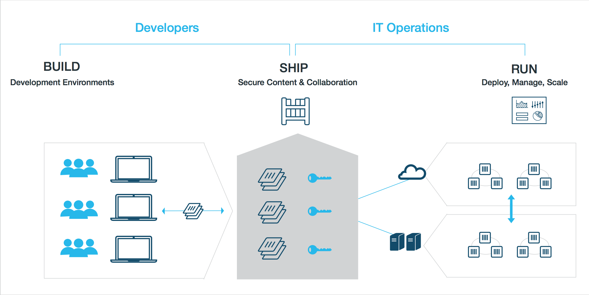

When
meets
Who am I?
- MSc in Information Systems and Computer Engineering from Instituto Superior Técnico (IST)
- Software Engineer @ Codacy
- Coder for fun and profit
- 😍 Scala
- Open Source enthusiast on the free time (@rtfpessoa)
Functional
Object Oriented
Performing
Statically typed
Scalable
Scala
Extensible
Modern
Compatible
Flexible
Expressive
Fun
Very Modern! Such Scalable! Much Fun! Wow!
But, how to develop and deploy?
Learn to Docker
in
10 Minutes
Docker, what and why?
- is a lightweight container system (Portability, Control).
- based on a slimmed down OS (Customization).
- with processes, network and fs virtualization (Security, Isolation).
Docker, how?
Let's start with something
more
familiar
Docker, basics?
- Dockerfile
- Image
- Container
Docker, dockerfile?
- Specification for the docker
- List of basic instructions (add, copy, move, run)
Immutable infrastructure (just like your code)
- Can be version controlled
- Same structure as in production
- No hot-fixes, every change is a new version
Docker, image?
- Base fs to be launched
- Group of layers
Each version, one more layer
- Faster builds *
- Each change is only one more layer *
Docker, container?
- Running version of an image
- One process*
Just run it
- Fast app startup times
- Isolation from the host
- Start, stop and start again
Docker, installation?
Linux
apt-get update
apt-get -y install linux-image-extra-$(uname -r)
sh -c "wget -qO- https://get.docker.io/gpg | apt-key add -"
sh -c "echo deb http://get.docker.io/ubuntu docker main\ > /etc/apt/sources.list.d/docker.list"
apt-get update
apt-get -y install lxc-docker
OS X
Docker Toolbox (and VirtualBox or xhyve)
Now that all of you are docker experts...
Let's create a docker
Docker, creating a dockerfile?
FROM rtfpessoa/ubuntu-jdk8:latest
RUN apt-get update
RUN locale-gen en_US en_US.UTF-8
RUN useradd -r -s /bin/false -d /srv dockerUser
RUN chown -R dockerUser /srv
USER dockerUser
ENTRYPOINT /srv/bin/app.sh
CMD ["defaultParam1","defaultParam2"]
Docker, building the docker?
docker build -t orgName/imageName:version .
Docker, running the docker?
docker run orgName/imageName:version
docker run -it --entrypoint bash orgName/imageName:version
But how to run an sbt/scala application?
Scala using docker
- Dockerizing a Scala application
- Testing with Docker
Dockerizing a Scala application
Select a base image
- java:openjdk-8 (openjdk | ubuntu)
- frolvlad/alpine-oraclejdk8 (oracle jdk | alpine linux)
- rtfpessoa/ubuntu-jdk8:latest (oracle jdk | ubuntu)
Dockerizing a Scala application
Integrate with sbt
- sbt-docker and sbt-assembly (first lib, scala dsl, uses a fat jar)
- sbt-native-packager (generic sbt packager, half dsl half strings)
resource: sbt-docker presentation
Dockerizing a Scala application
sbt-native-packager
addSbtPlugin("com.typesafe.sbt" % "sbt-native-packager" % "1.0.6")
enablePlugins(DockerPlugin)
Dockerizing a Scala application
sbt-native-packager
import com.typesafe.sbt.SbtNativePackager._
import com.typesafe.sbt.packager.Keys._
dockerBaseImage := "rtfpessoa/ubuntu-jdk8:latest",
dockerExposedPorts := Seq(9000),
maintainer in Docker := "rtfpessoa <rodrigo@codacy.com>",
defaultLinuxInstallLocation in Docker := "/srv",
daemonUser in Docker := "dockerUser",
version in Docker := version.value,
dockerEntrypoint := Seq(s"bin/${name.value}" + " -Dconfig.file=conf/$PLAY_CONFIG_FILE -Dlogger.file=conf/$PLAY_LOG_FILE")
dockerCommands := dockerCommands.value.flatMap {
case cmd@(Cmd("ADD", "codacy /codacy")) => List(cmd,
Cmd("RUN", "adduser --uid 2004 docker"))
case other => List(other)
}
Dockerizing a Scala application
Publishing
sbt docker:publishLocal
Testing with Docker
- Databases
- Services
- Micro-services
Testing with Docker
Workflow
- Start dbs and external services
- Run the tests
- Stop the containers and clean the environment
Can't we do better?

Yes we can!
Testing with Docker
Mixin services
trait DockerPostgresqlService extends DockerKit {
val DefaultDbPort = 5432
val postgresqlContainer = DockerContainer("postgresql:9.4.4")
.withPorts(DefaultDbPort -> None)
.withReadyChecker(DockerReadyChecker.LogLine(
_.contains("waiting for connections on port")
))
abstract override def dockerContainers: List[DockerContainer] =
postgresqlContainer :: super.dockerContainers
}
Docker @ Codacy
Docker @ Codacy
- Deploy the infrastructure
- Dynamically deploy workers
- Run static analysis tools
Docker @ Codacy
Deploy the infrastructure & Workers
- Amazon Elastic Beanstalk
- Amazon EC2
- Launch AMI with Ansible
- Self managed dockers
Docker @ Codacy
Run static analysis tools
- Docker inside docker 😭
- Reduce process running scope
- Limit network connectivity
- Contained filesystem
Docker @ Codacy
Example:
codacy/codacy-eslintDocker @ Codacy
You can create your own
Summary
- Simplifies app development and deployment
- Easily integrates with sbt
Caveheats
If you dive deep be sure to take lot's of oxygen
- Breaking changes: permissions, security
- Performance of the fs
- Docker inside docker
- OS X non native support (mount more folders in the VM like /tmp and /private/var/folders)
Questions?
Nah, we're running outta time. Seriously.